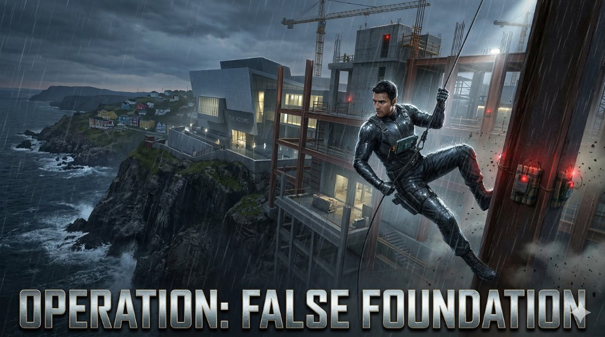
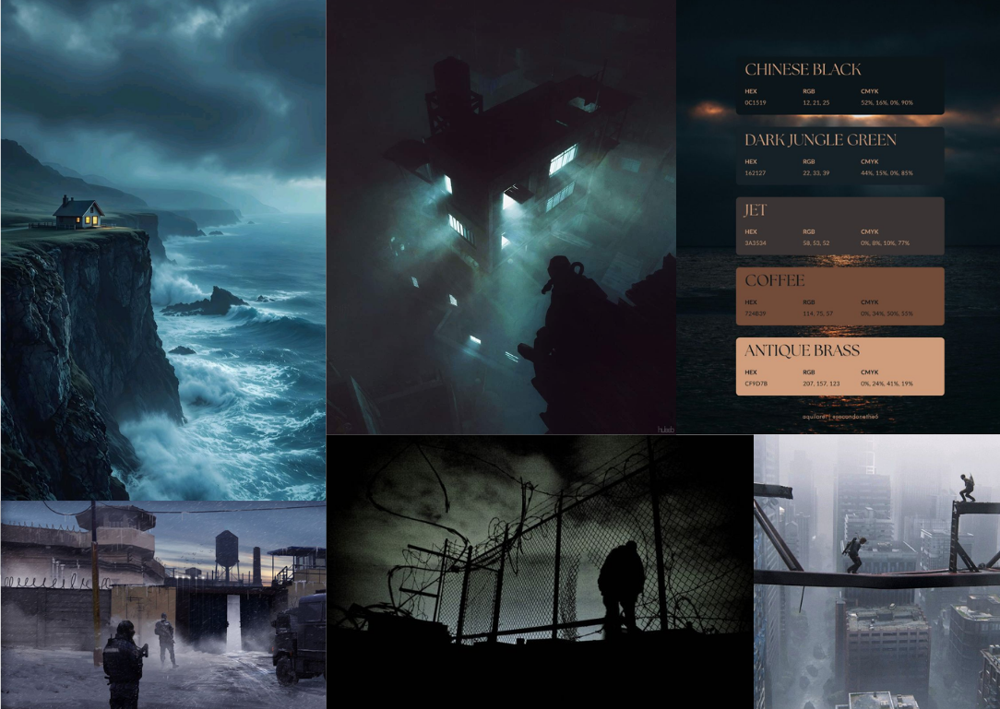
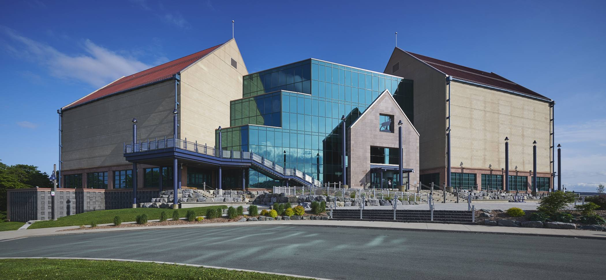

The Rooms: Descent into Deception
Operation: False Foundation — Level Design Document
4. Context: Story, Theme, Location, Objective
4.1 Story
What happens before this level: Sid is sent by his agency to find proof that the museum owner is using a construction project to hide illegal money. The agency thinks the owner is just a criminal trying to hide cash through a fake renovation.

What happens during this level: While hacking a computer in the site trailer, Sid finds a hidden message showing the owner's family has been kidnapped. He learns that terrorists are forcing the owner to help them plant bombs under the building to make the museum fall into the ocean during a world leader meeting. The explosion is designed to look like a "construction accident" so no one thinks it's a terrorist attack. Sid must steal a keycard from the Skeleton Building and block the bomb's remote signal in the Level 3 Archives.

The Fail-Safe Twist: As soon as Sid blocks the signal, a 10-minute automatic timer starts. The terrorists set this up so that if anyone tries to stop the signal, the bomb will explode anyway unless stopped in person. Sid must now race from the Archives to the basement to manually stop the explosives before time runs out.

What happens immediately after this level: Once the bomb timer is stopped, Sid calls his agency for backup to secure the museum and hunt the terrorists. He escapes by taking a "Leap of Faith" off the high cliff into the rainy ocean to meet his boat. He then reports that the owner is a victim and the "accident" was actually a murder plot.

Narrative purpose of the level: This level creates a major twist where a simple tax job becomes a high-speed race to stop a fake accident and save world leaders.
4.2 Theme and Atmosphere
Core emotions to evoke
- Tension: The feeling that you are always being watched by snipers in the dark.
- Panic: The rush to stop a bomb while the timer is counting down.
- Sympathy: Feeling sorry for the museum owner once you find out his family was taken.
- Urgency: The need to move fast but stay quiet before the world leaders arrive.
Time of day:
Night: The level happens in the middle of a dark night to help with stealth.
Weather and Environmental Conditions
- Night and Rainy: A cold, heavy rain falls over the cliffside.
- Flash Flooding: Small streams of water run down the construction site, making paths slippery.
- Heavy Wind: The storm brings strong winds that push against Sid as he tries to climb the Crane.
Atmosphere Notes

- Color Palette: Very dark blues and blacks with bright neon reflections in the rain puddles.
- Reflections: The red sniper lasers reflect off the wet ground, giving the player a sneaky way to see where the snipers are looking.
- Sound: The loud sound of rain on metal roofs helps hide the sound of Sid's footsteps, but it also makes it harder for him to hear guards coming.
- Visual Detail: Rain drips off the edges of the Cranes and the Skeleton Building, making the industrial zone look even more messy and cold.
4.3 Location

Level Location Name: The Rooms Museum and the Adjacent Cliffside Construction Site.
Architectural Style and References
- The level features a contrast between a modern, clean museum made of glass and concrete and a messy, industrial construction zone.
- It is based on the real "The Rooms" building in St. John's, which sits high on a hill overlooking the harbor.
Environmental Conditions
- Exterior: A dark, rainy, and windy cliffside with very high vertical drops.
- Interior: The museum is quiet and clean with four main floors and an underground basement.
- Verticality: The level is built on a massive scale, moving from the high cliff road down to sea level.
- Openness: The construction zone is open and exposed to rain and snipers, while the museum interior has tight hallways and large open galleries.
How this location supports the story and theme
- The Perfect Cover: Because the site is already under construction, the terrorists can hide bombs and dig tunnels without anyone noticing.
- The Fake Accident: The steep cliff lets the terrorists plan for the building to fall into the ocean. This makes the attack look like a tragic construction mistake or a landslide caused by the heavy rain instead of a planned attack.
- High-Stakes Verticality: The height of the cliff and the multi-story museum make the mission feel very dangerous. It forces Sid to climb high for the keycard and then go deep into the basement for the bomb.
- A Cinematic Escape: The cliff edge is needed for the "Leap of Faith" ending. This lets Sid call for backup and quickly escape by jumping into the sea where his boat is waiting.
- Atmospheric Tension: The rainy night and foggy cliffside make the world feel cold and lonely. This supports the theme of being a skilled spy who must work alone to stop a global disaster.
4.4 Overarching Player Objective
Main Objective: Sneak into the zone to find the kidnapping, stop the signal to start the fail-safe timer, and stop the explosives in the basement within 10 minutes before calling for backup and jumping off the cliff.
Fail Conditions
- Timer Runs Out: The 10-minute fail-safe timer reaches zero, causing the museum to explode and fall into the sea.
- Player Death: Sid is killed by mercenaries or snipers while trying to reach the basement.
- Failed Escape: The player fails the final "Leap of Faith" after calling for backup.
- Early Explosion: Trying to stop the bomb in the basement without first stopping the signal in the Archives.
7. Difficulty vs Time Plan

| Time (min) | Event / Beat | Short Description | Difficulty (0–10) |
|---|---|---|---|
| 1–2 | Yard Entry | Enter the construction site and hide from the first guards. | 2 |
| 2–5 | Patrol Sneak | Move past guards checking trailers with flashlights. | 3 |
| 5–6 | The Trailer Hack | Discover the kidnapping twist and the "Fake Accident" plot. | 4 |
| 6–10 | The Big Climb | Start climbing the Skeleton Building. | 5 |
| 10–13 | Keycard Steal | Reach the top and take the keycard. | 6 |
| 13–15 | Museum Entry | Use the crane route or the main entry. | 7 |
| 15–18 | Archives Sneak | Navigate the squeaky floors to reach the signal terminal. | 7 |
| 18–20 | The Bomb Dash | Race to the basement and stop the explosives under pressure. | 9 |
11. Reference Images
Gameplay / Encounter Reference: Splinter Cell: Blacklist
Description: The "American Consumption" mission's mix of industrial sneaking and vertical pipe climbing.
Gameplay Goal: Using high verticality to bypass guards and using environmental distractions (like crane hooks or squeaky floors) to keep a "Ghost" or "Panther" playstyle.